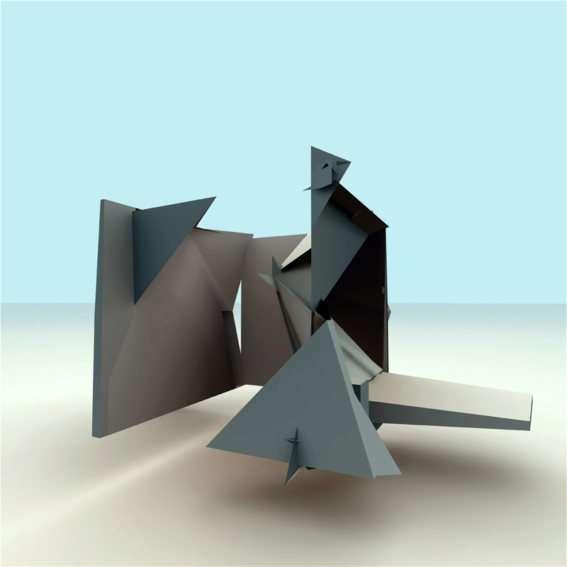
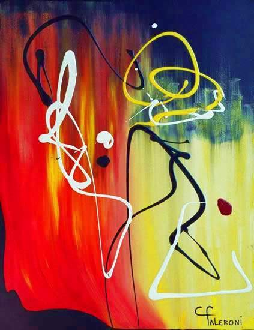
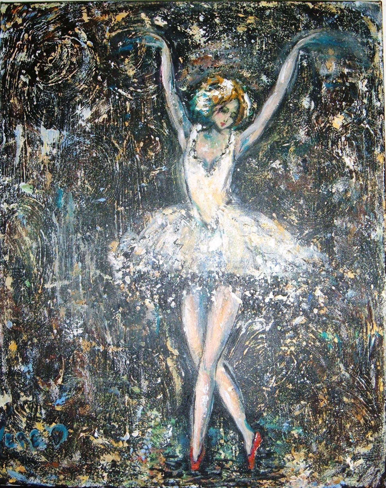

Click image to view artist's Autogallery 2010 exhibit
The Three Fathers
by Dom
04/21/2022

What About Us?
by Jean Francois Dorza
04/22/2022

Spam Architecture 06 
by Alex Dragulescu
04/23/2022
Input
by Indira Emmerlich
04/24/2022

Bailarines2 
by Maria Cristina Faleroni
04/25/2022
Flying 
by Veronica Fishman
04/26/2022
Just Dreams
by drfranken
04/27/2022
Neptunes_8
by Warren Richard Furman
04/28/2022

Old Beggar
by Gegen
04/29/2022

Thoughts of Rothko
by Christopher Glembotzky
04/30/2022